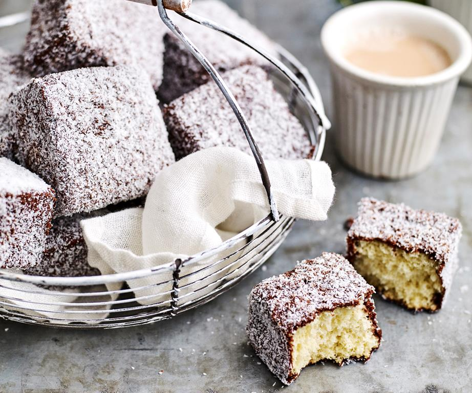

Classic lamingtons

Ingredients:
Cake:
- 4 eggs
- 2/3 cup (150g) caster sugar
- 1 cup (150g) self-raising flour
- 1/4 cup (35g) cornflour
- 25 gram soft butter, chopped
- 1/3 cup (80ml) boiling water
- 4 cups (270g) desiccated coconut
Icing:
- 4 2/3 cups (750g) icing sugar mixture
- 1/2 cup (50g) cocoa powder
- 20 grams soft butter
- 3/4 cup (180ml) milk
Steps:
- Preheat the oven to 180°C (160°C fan-forced). Grease and flour a 20cm x 30cm lamington pan, line base with baking paper.
- Beat eggs in a small bowl with an electric mixer until light in colour. Gradually add sugar; beat for 8 minutes or until the mixture is thick. Mixture should form thick ribbons when the beaters are lifted.
- Meanwhile, sift flour and cornflour together three times. Combine butter and boiling water in a small heatproof bowl.
- Transfer egg mixture to a large bowl. Sift the flour mixture over the egg mixture; using a balloon whisk or a large metal spoon, gently fold the flour into the egg mixture, then fold in the butter mixture.
- Pour mixture into prepared pan. Bake in a moderate oven for about 25 minutes or until sponge springs back when touched lightly in the centre and comes away from side of pan. Turn cake onto a wire rack to cool.
- Cut cake into 20 even pieces
- Meanwhile, to make chocolate icing, sift the icing sugar and cocoa into a large heatproof bowl; add the butter and milk; stir over a medium saucepan of simmering water until icing is smooth and thick enough to coat the back of a spoon. Divide icing mixture into 2 small bowls.
- Place coconut in a shallow bowl.
- Using a large fork, dip each piece of cake briefly into icing until cake is coated in icing. Hold over bowl to drain off any excess. Dip half the cake pieces in one bowl of icing and the other half in the second bowl of icing. (We have separated the icing into two bowls, as cake crumbs will thicken the icing and make it difficult to use.) If the icing becomes too thick, stand it over hot water while dipping, or reheat gently with a little more milk. If necessary, strain the icing into a clean bowl.
- Toss cake gently in coconut. Transfer cake to a wire rack; stand until set
Back